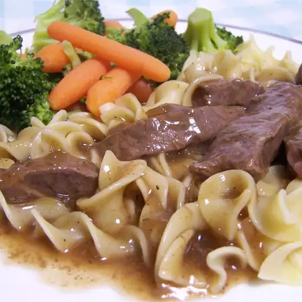

Round Steak Sauerbraten

Round Steak Sauerbraten is a dish made of egg noddles,
steak and gravy. It is considered a good budget substitute for
Sauerbraten, using round steak.
Ingredients
- 11/2 lbs. top round steak, trimmed and sliced
- 1 tbsp vegetable oil
- 13/4 packet dry brown gravy mix
- 2 cups water
- 1 tbsp onion powder
- 1 tbsp brown sugar
- 2 tbsp red wine sugar
- 1 tbsp Worcestershire sauce
- 1/4 teaspoon ground ginger
- 1 bay leaf
- 1/2 teaspoon salt
- Ground black pepper to taste
Instructions
- Heat the oil in a large saucepan over medium heat.
- Add sliced meat and brown well.
- Add gravy mix and water and bring to a boil,
stir consistently.
- Stir in the onion powder, brown sugar, vinegar,
Worcestershire sauce,
ginger, bay leaf and salt,
and ground black pepper to taste.
- Return the meat to the pan,
reduce heat to low,
cover and simmer for one hour,
or until meat is tender.
- Remove bay leaf.
Home
Instructions from allrecipes